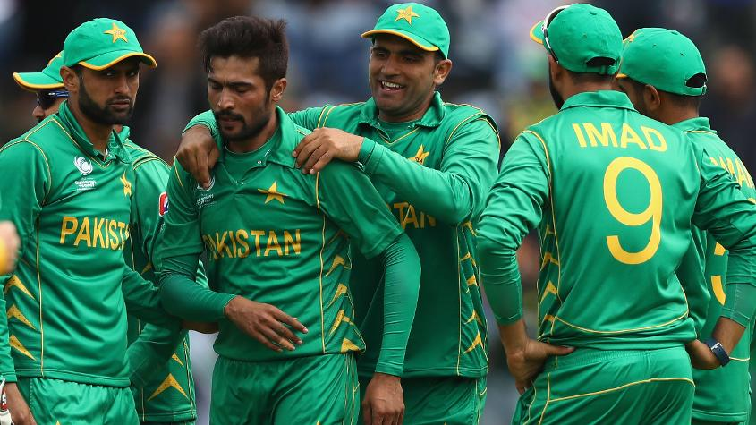

#CT17 SL v Pak Innings Report
#CT17 SL v Pak Innings Report
Pakistan pacers keep Sri Lanka to 236
Dickwella adds steadying fifty before Amir and Junaid trigger middle-order collapse
Mohammad Amir went wicketless in the first two games of the ICC Champions Trophy 2017. Junaid Khan was not among Pakistan’s first-choice pacers for the tournament.
On Monday in Cardiff, the two Pakistan left-arm pacers showed what they can do on their day, wreaking havoc on Sri Lanka’s middle order with a brilliant spell in tandem. Junaid and Amir picked up two wickets each between the 32nd and 35th overs as Sri Lanka lost 4 for 6, before ultimately being bowled out for 236 in 49.2 overs.
Sri Lanka was going strong at 161 for 3 with Niroshan Dickwella (73) and Angelo Mathews (39) well set before the Junaid-Amir show began. Junaid finished with 3 for 40 from his 10 overs, which included three maidens, with two of those being wicket maidens.
Hassan Ali produced an equally impressive spell of 3 for 43.
After winning a crucial toss in overcast conditions, Pakistan’s seamers hit their lines well, with Junaid in particular looking threatening. Sri Lanka’s openers countered the accuracy by targeting the short straight boundaries, driving wonderfully through the line. Dickwella also targeted the boundary behind him, playing an outrageous scoop that would have made Tillakaratne Dilshan proud.

The tempting straight region also resulted in Danushka Gunathilaka’s downfall when he drove Junaid on the up to hand a simple catch to mid-off in the sixth over.
England still got the runs and reached 52 at the end of the first ten. Bairstow got going and enjoyed more luck when he was put down on 42 at slip but couldn’t make use of the fortune, slogging Hasan Ali’s third ball straight to deep mid-wicket after adding just one more run.
Sarfraz then applied the brakes in the middle overs by getting Hafeez to bowl to Eoin Morgan straightaway. The England captain couldn’t get going like he usually does and took 21 balls for his first boundary.